Dashboard / Instrument Panel: Service and Repair
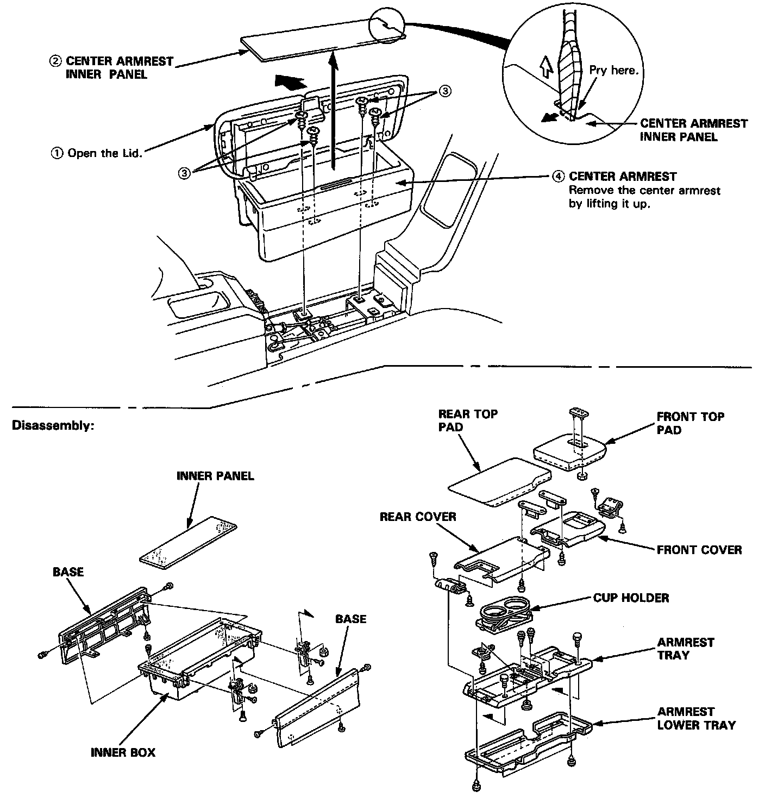
Center Armrest
Replacement
CAUTION When removing the center armrest inner panel, wrap the flat tip screwdriver with protective tape or a shop towel to prevent damage.
NOTE: Take care not to scratch the center armrest, dashboard and rear center trim panel.
Disassemble in numbered sequence.
Installation is the reverse of the removal procedure.
Dashboard
Component Removal/Installation
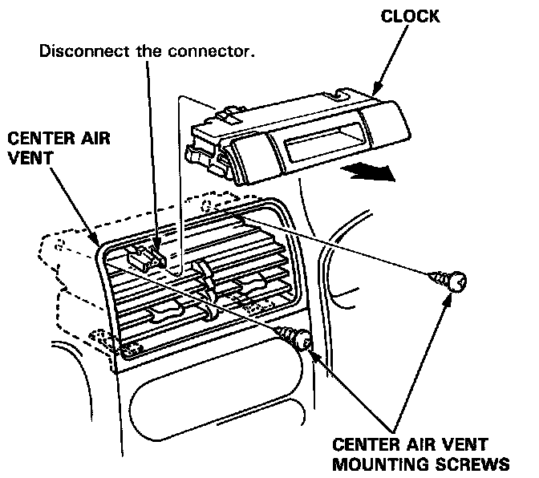
Clock and center air vent removal:
NOTE: Take care not to scratch the dashboard and related parts.
1. Remove the clock by pulling it backward from the center air vent, then disconnect the connector.
2. Remove the center air vent mounting screws.
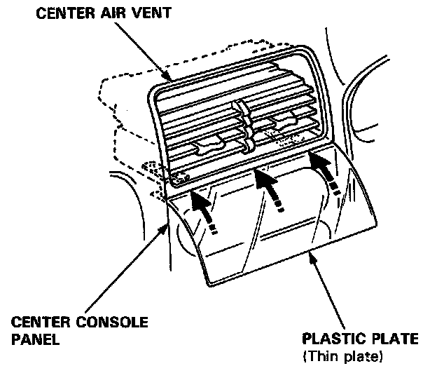
3. Insert a plastic between the center air vent and center console panel to prevent damaging them.
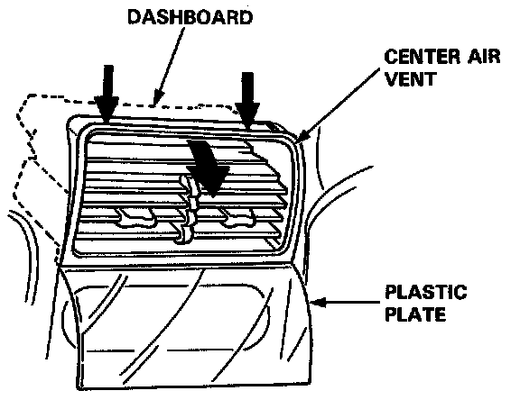
4. To make a gap between the center air vent and dashboard, pull the top of the center air vent while lowering it as shown.
NOTE: Make as large a gap as possible.
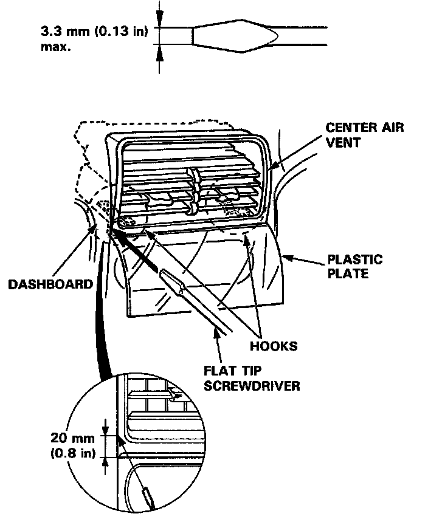
5. Insert a flat tip screwdriver between the center air vent and dashboard as shown.
NOTE: Use the correct size flat tip screwdriver as shown.
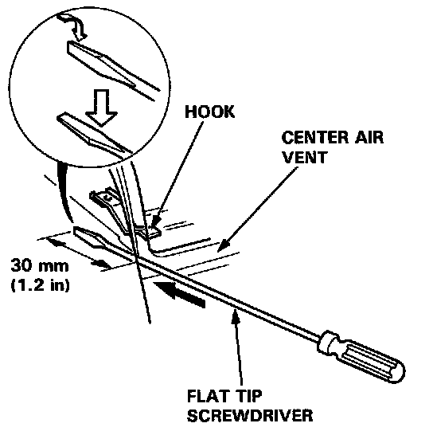
6. After inserting the screwdriver, turn it 90°
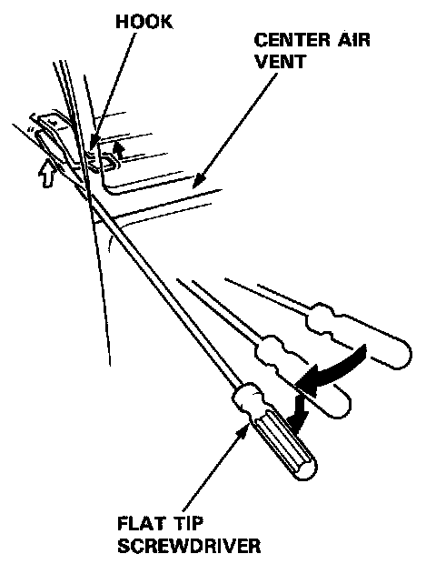
7. Insert the tip the screwdriver in under the hook by pivoting it. Detach the hook by prying it.
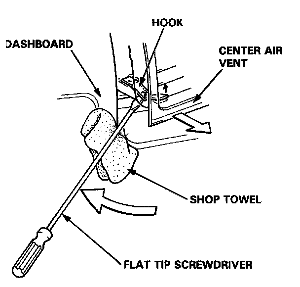
8. Pull the center air vent backward while prying the hook.
CAUTION: Use a shop towel on the dashboard to prevent damage.
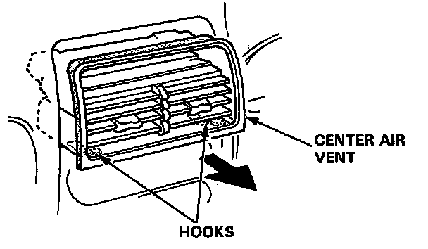
9. Detach the other hook in the same manner, then remove the center air vent.
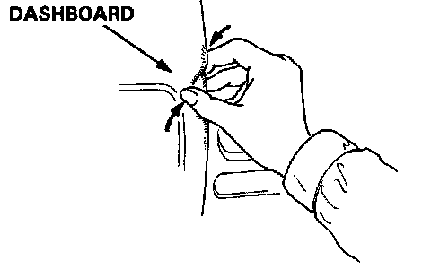
10. Install the center air vent and clock.
NOTE:
- If there is a minor dent on the dashboard, repair it by hand as shown.
- Make sure the connector of the clock is connected properly.
Component Removal/installation. SRS components are located in this area. Review the SRS component locations, precautions, and procedures in the SRS.
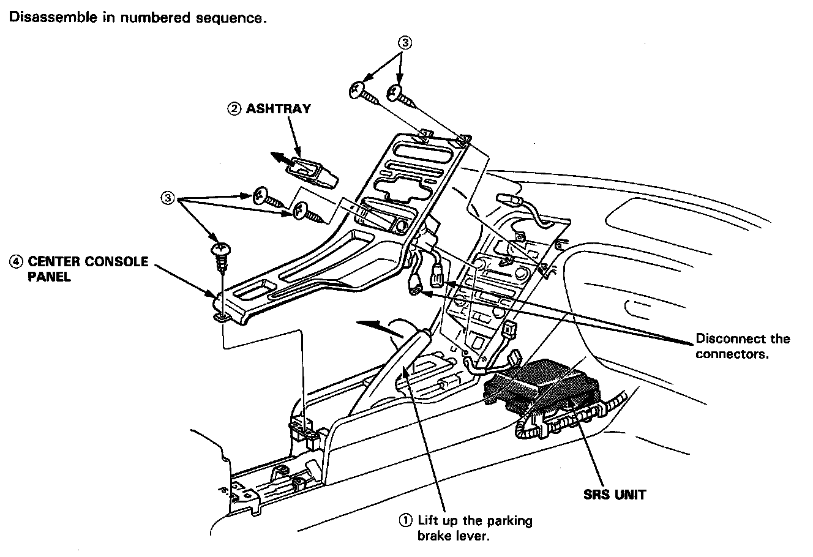
Center console panel removal:
NOTE:
- Take care not to scratch the dashboard, center console panel and related parts.
- Do not drop the screws inside the dashboard.
- Remove the center armrest, clock and center air vent.
Installation is the reverse of the removal procedure.
NOTE: Make sure the connectors are connected properly.
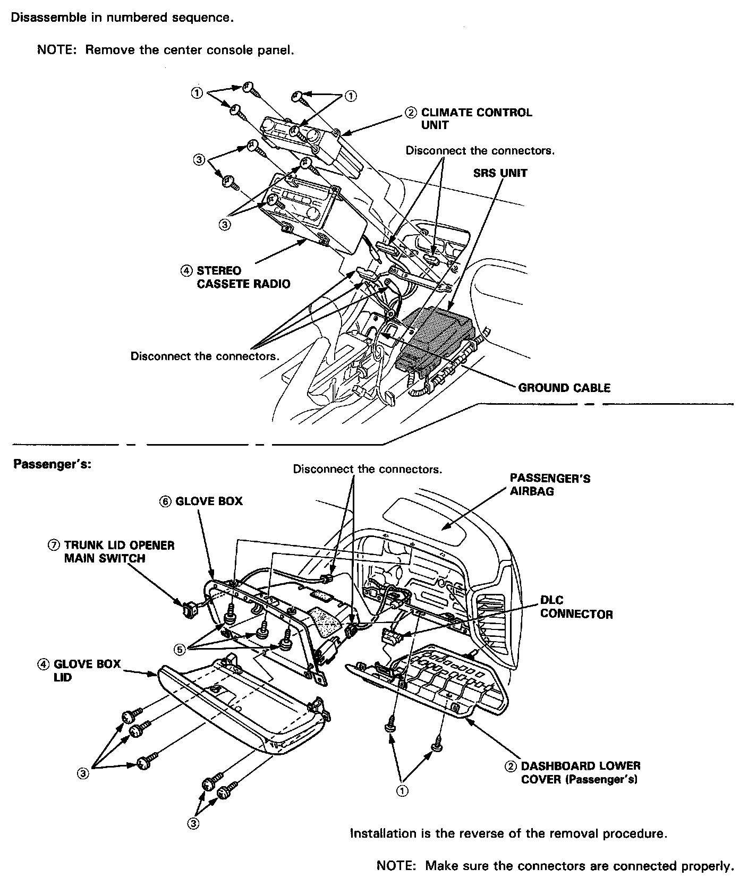
Climate control unit, stereo cassette/radio and glove box removal:

NOTE: Take care not to scratch the dashboard, steering column and related parts.
CAUTION: When prying with a flat tip screwdriver, wrap it with protective tape or a shop towel to prevent damage.
Installation is the reverse of the removal procedure.
NOTE: Make sure the connectors are connected properly.
Replacement
SRS components are located in this area. Review the SRS component locations, precautions, and procedures in the SRS.
1. To remove the dashboard, first remove the Seats.
- Dashboard lower cover (Driver's)
- Dashboard lower pad
- Dashboard brace
- Center armrest
- Clock, center air vent and console panel
- Climate control unit and stereo cassette/radio
- Dashboard lower cover (Passenger's)
- Glove box lid and glove box
2. Lower the steering column.
To avoid accidental deployment and possible injury always install the short connector on the airbag connector when the SRS wire harness is disconnected.

NOTE
- Remove the access panel, then remove the short connector (RED). Disconnect the connector between the airbag and cable reel, then connect the short connector (RED) to the airbag connector.

- Connect the special tool to the cable reel connector.

NOTE: To prevent damage to the steering column, wrap it with a shop towel
3. Remove the nuts, then remove the airbag bracket (passenger's)
- To avoid accidental deployment and possible injury always install the short connector on the airbag connector when the SRS wire harness is disconnected.
NOTE:
- Disconnect the connector between the passenger's airbag and SRS main wire harness. Connect the short connector (RED) to the airbag the connector.
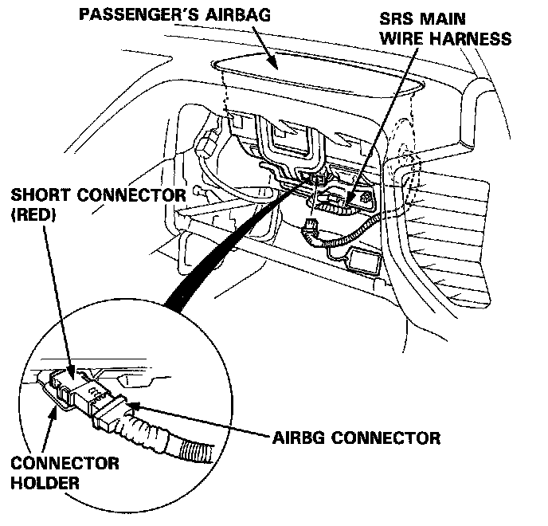
- Connect the special tool to the SRS main wire harness connector.
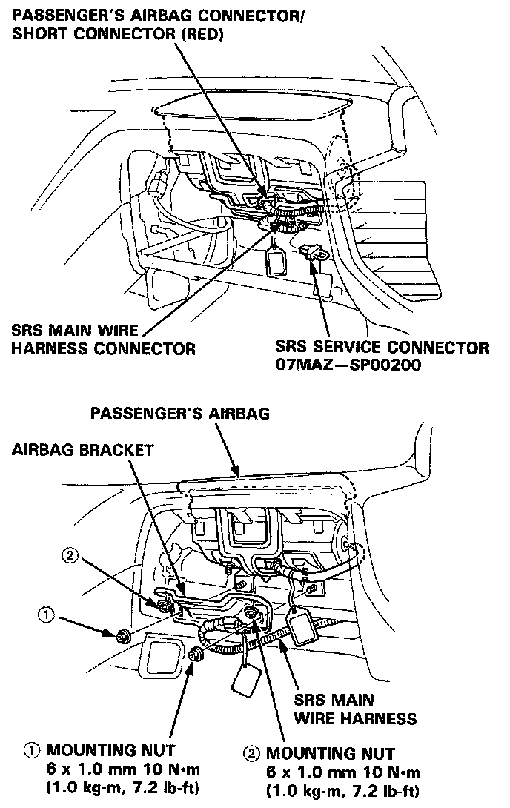
- When installing the airbag bracket, tighten the mounting nuts in the numbered sequence.
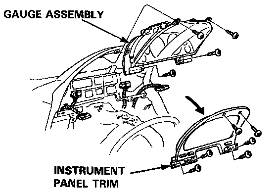
4. Remove the instrument panel trim and gauge assembly
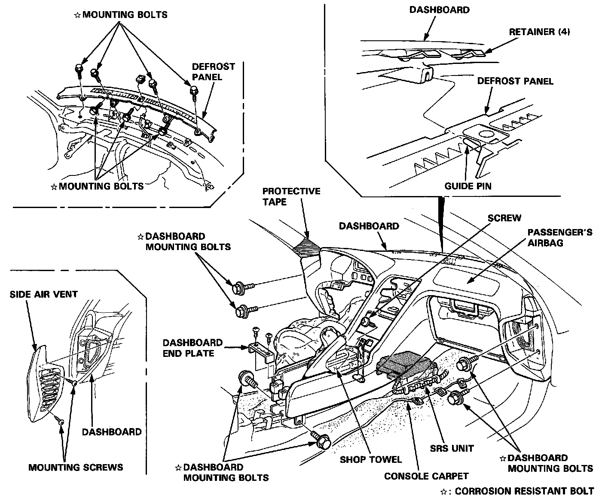
5. Remove the mounting screws, then remove the side air vents from each side of the dashboard.
6. Remove the dashboard end plate, and fold the console carpet down.
7. Remove the dashboard mounting bolts and screw, then lift and remove the dashboard.
NOTE:
- Take care not to scratch the dashboard.
- Use protective tape on the bottom of the front pillar trim.
- To prevent damage to the shift lever and indicator panel (A/T), wrap them with a shop towel.
CAUTION: When prying with a flat tip screwdriver, wrap it with protective tape or a shop towel to prevent damage.
NOTE: If necessary, remove the defrost panel.
8. Installation is the reverse of the removal procedure.
NOTE:
- Make sure the dashboard fits onto the guide pin and defrost panel correctly.
- Before tightening the mounting bolts, make sure the wire harnesses are not pinched.